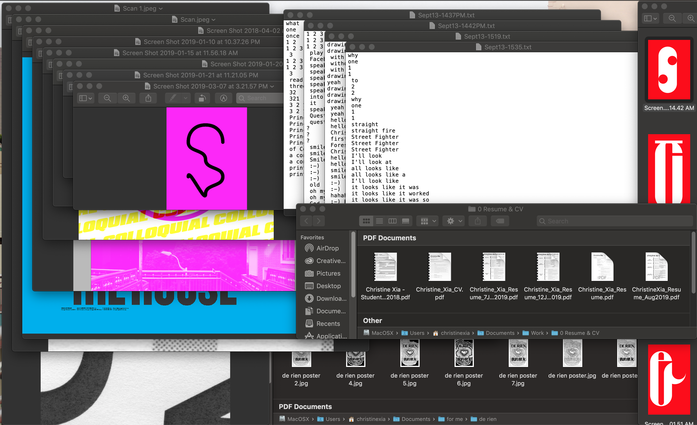

Welcome to the Me-Wide-Web
Act 1
Interactive Trial
My first week development of my div-based typeface where I introduced a level of interactivity (I eventually had to leave out the hover stuff because it just took waaaaaay too long to add interactivity for each letter).
Rave in Berlin 1100
A to Z, 0 to 3! What started off as playing around with the rules of CSS classes and high-contrast forms turned into a blackletter-inspired div-based typeface.
Monday Night Seminars
Building off of the event’s thematic inspiration, Marshall McLuhan’s “The Mechanical Bride: Folklore of the Industrial Man”, this promotional website imagines what the collision of folklore and the web could look like. Using maximalist type and nods towards the calligraphic forms of illuminated scripture, the site echoes the event speakers’ concerns of our awareness of our digital surroundings. While I haven’t had the chance to make this website responsive yet, check out how sick it looks when all the elements collide! (Don’t worry, I will get around to making it responsive over the break—it’s defs gonna be a portfolio piece)
Happy Times at the IKOB
Designed by Lucas Le Bihan (Also the designer for Sporting Grotesque! Love that font!). A modern recut of times, which I thought well-suited the event’s theme of re-thinking our relationship with the web! I also just really enjoy Velvetyne’s website in terms of design (which, ATM is currently redirecting to a site about the strike, but hopefully you’re familiar with what it typically looks like. The strike website is also super cool though!)
Trickster
Designed by Jean-Baptiste Morizot (For a look into the thinking/inspiration/design behind this font read the post-mortem of this font here). A cool font borrowing from old calligraphic forms, similar reasons of use as Happy Times.
Position: Sticky
I used sticky elements to create a scrolling experience reminiscent of flipping through pages of a book. I could never figure out the weird stuff that happens when you scroll down to the last element on the page, so I ended up just putting some secret text in the empty space that revealed itself once you scroll all the way to the bottom.
Get mouse movement speed (from Sparklines Library)
I used this to track the speed of the mouse to get the background to flash yellow, adding on to the hyper visibility of the user’s interactions on the website.
Act 2
My Are.na brainstorm
Inspiring interactive sites, sources of content, and inspirations of documentation and archives.
Node.js
My first time working node.js and type things into the terminal!
Socket.io
First time communicating between server and client!
Count number of connected clients
One of the things I needed to know to be able to display cursors corresponding to each connected user across all browsers.
Get list of connected clients
Same as before, but also to try and find out how to remove cursors when users have disconnected.
Remove disconnected clients from array (I never really fully got this one to work)
Still trying to figure out how to remove cursors when users disconnnect!!! Ahh!!!
Draw div when moving cursor (have something follow the cursor)
What it sounds like.
Fade audio volume
Applying jQuery’s animate() to transition between muted and unmuted tracks.
Clearing animation queue build-up caused by holding mouse down
Because holding down the mouse continuously keeps adding another animation to be played, I needed the build-up of animations to clear whenever a user releases the mouse.
Library of Congress’ Amazing Grace Collection
The full collection of songs and history that inspired the whole thing!
Saving Grace
A cross-browser interactive site that brings artifacts out from the storage system into a more active and engaged experience for the user. Requiring the collaboration between users, the overlapping tracks of audio shift and morph into one another, creating new sounds and experiences depending on the participants, similarly to how the cultural relevance and value of the song, “Amazing Grace”, has transformed throughout time.
Act 3
Ideas & Stuff
A collection of things I had assembled for my Workshop stuff that I thought could be expanded during this last project. I think everything here remains relatively unresolved...
Text Generation (Defunct Idea)
One of the tests I did with my text-generation idea to try and revive or rehumanize the portraits from the expedition, which in the end was not very fruitful.
Tableaus
Desktop

A get-to-know me exercise: who I am, where I’m from, what I like, what I make.
Windows
How I think I use my computer: I rely heavily on the unprecious nature of working in a digital medium, being able to save copies and make multiples and preserve every step and mistake I make throughout my making-process.
Reading Responses
Exercises & Other Stuff
My First (in-class) Script
I don’t really remember if this was the outcome for the in-class exercise we were doing (oops!) but I did make a for loop that changed the colour of an appended element!
What’s the weather?
Using a weather API! Fun! I also make the background colour relative to the temperature.
Responsive iframe
Finally!
Text Orientation
Just look at the sideways cursor on those sidebar titles! Very cool!